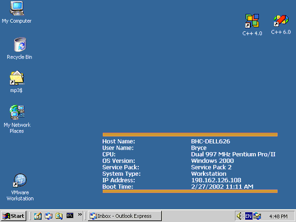
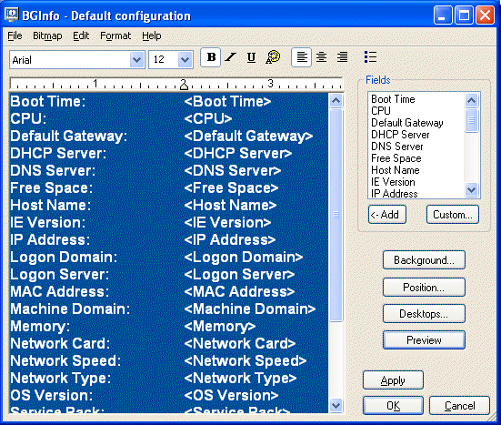

How many times have you walked up to a system in your office and needed to click through several diagnostic windows to remind yourself of important aspects of its configuration, such as its name, IP address, or operating system version? If you manage multiple computers you probably need BGInfo. It automatically displays relevant information about a Windows computer on the desktop's background, such as the computer name, IP address, service pack version, and more. You can edit any field as well as the font and background colors, and can place it in your startup folder so that it runs every boot, or even configure it to display as the background for the logon screen.
Because BGInfo simply writes a new desktop bitmap and exits you don't have to worry about it consuming system resources or interfering with other applications.
BGInfo works on 95 and higher, and Windows NT 4.0 and higher.
Sysinternals BgInfo
See Mark's Windows IT Pro Magazine Power Tools article for a primer on using BgInfo. If you have questions or problems please visit the Sysinternals BgInfo Forum.
By placing BGInfo in your Startup folder you can ensure that the system information being displayed is up to date each time you boot. Once you've settled on the information to be displayed use the command line option /timer:0 to update the display without showing the dialog box.
You can also use the Windows Scheduler to run BGInfo on a regular basis to ensure long-running systems are kept up to date.
If you create a BGInfo configuration file (using the File|Save Settings menu item) you can automatically import and use those settings on other systems by adding the /I<path> or /iq<path> command line option.
When you run BGInfo it shows you the appearance and content of its default desktop background. If left untouched it will automatically apply these settings and exit after its 10 second count-down timer expires.
Selecting any button or menu item will disable the timer, allowing you to customize the layout and content of the background information.
If you want BGInfo to edit or use a configuration stored in a file (instead of the default configuration which is stored in the registry) specify the name of the file on the command line:
BGInfo MyConfig.bgi
Fields: Selects what information appears on the desktop, and the order in which it is displayed. For networking fields (NIC, IP, MAC, etc.) a separate entry is created for each network card on the system. Use the Custom button to add special information you define yourself.
Background: Selects the color and/or wallpaper to use for the background. If you select the Copy existing settings option then BGInfo will use whatever information is currently selected by the logged on user. This option allows end users to personalize their desktop while still displaying the BGInfo information.
Position: Selects the location on the screen at which to place the text. If some items are very long (for example some network card names) you can use the Limit Lines to item to truncate them. The Compensate for Taskbar position checkbox adjusts the position of the text to ensure that it is not covered by the Taskbar. The Multiple Monitor Configuration button allows you to specify how multiple monitors attached to a single console should be handled.
Desktops: Selects which desktops are updated when the configuration is applied. By default only the User Desktop wallpaper is changed. Enabling the Logon Desktop for Console users option specifies that the wallpaper should be displayed on the logon desktop that is presented before anyone has logged onto the system. On Windows 95/98/ME systems the same desktop is used for users and the login screen, so this option has no effect. Enabling the Logon Desktop for Terminal Services users option specifies that the wallpaper should be displayed on the Terminal Services login screen. This option is useful only on servers running Terminal Services.
Preview: Displays the background as it will appear when applied to your system.
These are options that control how the bitmap is produced, where it is located and how to import/export settings.
File | Open: Opens a BGInfo configuration file.
File | Save As: Saves a copy of the current BGInfo configuration to a new file. Once created, you can have BGInfo use the file later by simply specifying it on the command line, or by using File|Open menu option.
File|Reset Default Settings: Removes all configuration information and resets BGInfo to its default (install-time) state. Use this if you can't determine how to undo a change, or if BGInfo becomes confused about the current state of the bitmap.
File|Database: Specifies a .XLS, .MDB or .TXT file or a connection string to an SQL database that BGInfo should use to store the information it generates. Use this to collect a history of one or more systems on your network. You must ensure that all systems that access the file have the same version of MDAC and JET database support installed. It is recommended you use at least MDAC 2.5 and JET 4.0. If specifying an XLS file the file must already exist.
If you prefer to have BGInfo update the database without modifying the user's wallpaper you can unselect all desktops in the Desktops dialog; BGInfo will still update the database.
Bitmap|256 Colors: Limits the bitmap to 256 colors. This option produces a smaller bitmap.
Bitmap|High Color/True Color: Creates a 16-bit or 24-bit color bitmap.
Bitmap|Match Display: Creates a bitmap with color depth matching that of the display. Because the bitmap generated by BGInfo is not updated when a user changes the display's color depth you may see unexpected results (especially dithering of the text and background) with some combinations of bitmap and display depth.
Bitmap|Location: Specifies the location to place the output bitmap file. On Terminal Services servers the bitmap should be placed in a location that is unique to each user.
Edit|Insert Image: Allows you to insert a bitmap image into the output. Because BGInfo's configuration information is stored in the registry and Windows limits the size of registry values you may encounter errors when inserting larger images. On Windows 9x/Me systems the limit is 16K, while on NT/2000/XP systems the limit is 64K.
<path> Specifies the name of a configuration file to use for the current session. Changes to the configuration are automatically saved back to the file when OK or Apply is pressed. If this parameter is not present BGInfo uses the default configuration information which is stored in the registry under the current user ("HKEY_CURRENT_USER\Software\Winternals\BGInfo").
/timer Specifies the timeout value for the countdown timer, in seconds. Specifying zero will update the display without displaying the configuration dialog. Specifying 300 seconds or longer disables the timer altogether.
/popup Causes BGInfo to create a popup window containing the configured information without updating the desktop. The information is formatted exactly as it would if displayed on the desktop, but resides in a fitted window instead. When using this option the history database is not updated.
/taskbar Causes BGInfo to place an icon in the taskbar's status area without updating the desktop. Clicking the icon causes the configured information to appear in a popup window. When using this option the history database is not updated.
/all Specifies that BGInfo should change the wallpaper for any and all users currently logged in to the system. This option is useful within a Terminal Services environment, or when BGInfo is scheduled to run periodically on a system used by more than one person (see Using a Schedule below).
/log Causes BGInfo to write errors to the specified log file instead of generating a warning dialog box. This is useful for tracking down errors that occur when BGInfo is run under the scheduler.
/rtf Causes BGInfo to write its output text to an RTF file. All formatting information and colors are included.